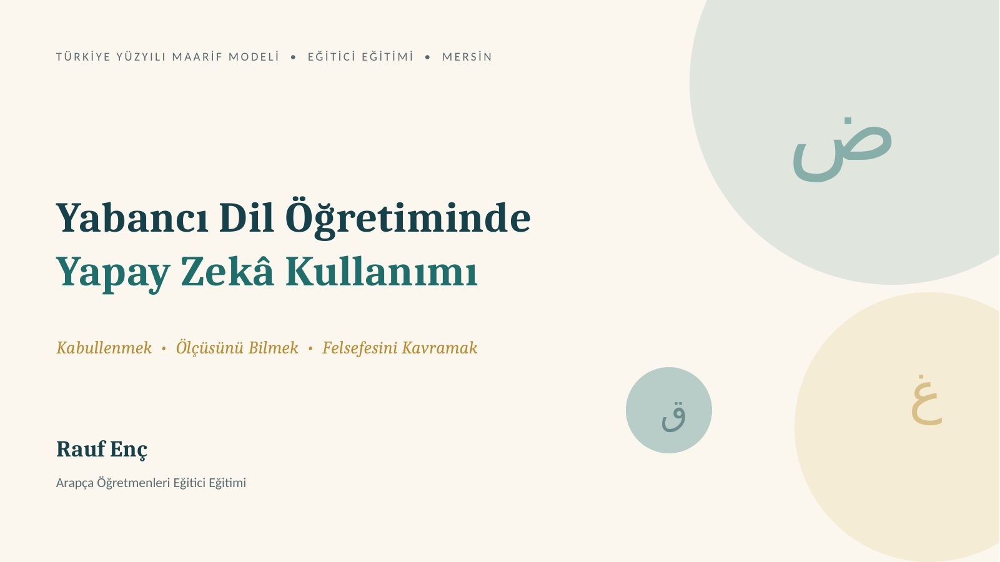

Muallim ve Makine
Yabancı Dil Öğretiminde Yapay Zekâ
Bu bir sunum sitesi değil; seminerin kendisi. Aşağı kaydırın: terazinin dengesini siz kurun, كيف حالك'in katmanlarını siz açın, yapay zekânın kafasının içine girin, kendi prompt'unuzu üretin.

Aynı alet, iki yüz.
Dengeyi kuran: niyet.
Dikkat kısa, beklenti yüksek, tempo baş döndürücü. Yapay zekâ bu iklimin ürünü ve hızlandırıcısı. Sürgüyü çekin; aynı aracın nasıl risk de fırsat da üretebildiğini görün.
- Riskler
- Sabırsızlık
- Yüzeysellik
- Kolaycılık
- Dikkat dağınıklığı
- Fırsatlar
- Motivasyon
- Erişilebilirlik
- Üretkenlik
- Canlı öğrenme
Dört oda, dört deneyim
Seminerin her kavramı burada çalışan bir araca dönüştü. Kapıları açın.
Laboratuvar — YZ Nasıl Düşünür?
Cümleyi token'lara parçalayın, kral−erkek+kadın denklemini çalıştırın, dikkat fenerini gezdirin, tahmin motoruyla cümle kurun.
Atölye — MERSİN Oluşturucu
Altı adımda profesyonel prompt üretin, kendi prompt'unuzu röntgene sokun, “Temenni'den Prompt'a” oyununda rozet kazanın.
Tersine Mühendislik Odası
Eksik Bilgi Kartları vakasını katman katman soyun, üç reçeteyi alın, kendi sınıfınız için dersi sentezleyin.
Sunum Merkezi
Tam ekran oynatıcı, bölüm menüsü, konuşmacı notları ve kronometreli Sunucu Modu — salonda internet olmasa bile çalışır.
Üç Ölçü
Yapay zekâyı hikmetle kullanmanın altın kuralları. Kartlara dokunun.
Şuur değil, istatistik
Yapay zekâ bilinçle değil, olasılıkla konuşur. Çıktısı ilham vericidir; hüküm değildir. Hata eder, uydurabilir.
Muavin, muallim değil
Hızı makine verir; yönü insan. Angarya robota — talim, terbiye, hikmet ve edep muallime.
Kopya değil, kalıp
İyi örnek taklit için değil, tersine mühendislik içindir. Metni değil, tasarım mantığını taşı.
“Tercüme memurluğu bitti. Arapça muallimliği aslına döndü.
Makine kelimeyi çevirebilir; insanı anlamla ancak insan tanıştırır.”